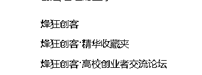

来源：https://rxmgihbc4u.feishu.cn/docx/HeTJdquunoD6zOxZ2DUcLspOnEf
大家好，我是挽歌!
03年20岁985自主创业大学生，烽狂创客创始人。21年考上一所985大学，大一获得国家励志奖学金。大二从零开始自媒体创业，专注私域关系运营，十一个月变现80W+!
本次分享，我将分享给大家：
1.半年多时间，纯靠私域，我从零开始打造了一个搞钱创业圈子【烽狂创客】的经历和完整心路历程！
2.我的自媒体创业感悟和私域关系运营经验总结！
希望对你有所启发和帮助!
2022年11月上旬的时候，朋友建议之下一时兴起注册了一个公众号。
12月份机缘巧合之下，我发现自媒体可以赚钱，由此打开了新世界，对自媒体产生了很强烈的兴趣。
因为没有老师教，所以我就自学：上网检索查询和学习实践各种自媒体相关的知识。
由此，开始我的自媒体运营之旅。
机缘巧合之下，我进入自媒体圈子，认识了一些优秀的公众号号主前辈，进入了一些自媒体社群。
自此，我开始像前辈们学习，并且被朋友圈种草，我掏钱加入了第一个付费社群，受益良多。
随即便付费加入了一些自媒体大V的知识星球和社群，由此开始了我的破圈之旅，也是我的知识付费之旅。
加入第1个社群之后，我就对社群产生了很强的兴趣，后来发现社群还可以变现，于是我就萌生了一个想法——建一个付费社群！
因为：
我一开始就决定做付费的社群，因为我知道单纯为爱发电不会长久。
于是我就建了我的第一个付费社群——【烽狂自媒体交流群】！
因为需要冷启动，所以我设置了前三十名免费加入。有几位来自公众号，大多数都是自媒体圈子里面链接到的朋友。
三十人以后，怎么让第一个人为我付费的？
我的方案是：朋友圈运营＋私聊推销转化。
当时也不太懂朋友圈运营，就是看别人朋友圈怎么带货的，我就去学，比如晒群成员反馈+朋友圈更新干货+阶梯涨价策略等。
至此，我积攒了第一批、近30位付费用户。
也正是通过这个社群，我赚到了第1个1000块，帮助我坚定了持续做社群的决心!
感悟：
一个优秀的创业者，应该对不确定性背后隐藏的契机始终保持敏锐的嗅觉。
对于普通人，不要着急去谈理想，谈热爱，更不要去谈一辈子。 我们应该趁年轻，去经历过更多、更曲折、更有趣的事，去见更多更优秀的人，去看更美丽的风景，去打开人生中更多的可能性。去长见识、打开认知，去遇见能够帮你逆天改命的契机！
主动争取之下，我成为了之前链接上的一位大佬的临时小助理，协助他运营一个社群。
当小助理的时候，我积极的展现自己的能力，为别人答疑解惑，辅助群主创造增加社群的价值。
然后我不仅仅被群主看到和表扬，还被被群里几百人都看到和认识，这一次直接和间接带来了被动加好友几百人！
好友增加之后，继续靠朋友圈运营＋私聊推销转化了50多位付费社群成员！
感悟：当你不够强大的时候，要学会借势、借力！
【实操建议】
1.能够找人带就尽量不要自己跑。真正的聪明人不会只靠自己走路。
2.别人的私域就是你的精准公域；在别人搭建的大舞台上面，多展现自己的羽翼，展示自己的实力，输出自己的价值，让更多的人看到你。
3.学会掌握分寸，尊重别人的领域。一切以为别人创造价值为前提，靠被动吸引，而不是主动引流。
继续运营一段时间之后，我意识到一个很大的问题：我没有任何公域结果作为背书！
这让我陷入一个困境：短期内社群增长很慢、门槛提不高。想要快速增长变现，根本不现实！
于是我开始苦思破局之法。
突然有一天我我想到我可以做资源整合、借势借力，打造一个高价值的产品出来。
其他平台我不行？我自媒体入局晚？我经验不够多？
没关系！
谁说了内容一定要自己会、教别人一定要自己教？！
我没有产品？没关系，我的合伙人有就行了！我没有流量？没关系，我的合伙人有就行了！
想到就去做，我就去我的社群和朋友圈公布我的项目策划以及我能给他们带来什么、需要他们做些什么等，启动了我的合伙人招募计划。
由于我的社群成员粘性蛮高的，所以不少朋友都想入伙，并且我还邀请了一位大佬作为我的项目特邀指导嘉宾。
随后合伙人计划项目在朋友圈发布，招纯融资合伙人，两天内融资2.5W＋！
我通过采用股份制让所有人融资入伙，最后组成了我的第一个自媒体运营团队。
经过我的策划，我以团队的名义，低客单价重组了我的社群，并且把它当做转化池去运营，并且确定了后端高客单盈利产品：各个自媒体平台运营的课程训练营。
自此，【烽狂自媒体交流群】正式更名为【烽狂自媒体创业俱乐部】。
通过团队运作，我借助几位有影响力的合伙人的协助推广，加上我设置的阶梯涨价策略，迅速让烽狂自媒体创业俱乐部人满100+。
感悟：
用好两个互联网思维——他们将会是你超越同龄人的利器！
杠杆：一鱼多吃，四两拨千斤。
复利：过去做的事儿，价值并没有停留在过去，还对未来的事儿产生促进和推动。
互联网独有的属性让你具备了说一句话就让千百万人看到的可能性。
学会使用杠杆和复利，去撬动更多的可能性和财富，很重要。
我反思了一下，想要形成一个完整的闭环，必须具备三个要素：
产品刚刚开始打造中，转化池也搭建好了，但是还缺一个流量池——我知道不能等产品完成了再去吸引流量。
于是，我创建了一个流量池：免费知识星球烽狂自媒体创业俱乐部(免费)
因为是免费星球，通过朋友圈推广，星球增长很快，几天时间，几百人人加入。
免费星球我也用心的提供价值，等粘性上去之后我就在免费知识星球发布微信社群的招募信息，吸引了不少新的朋友加入。
感悟：
一切皆有策略，一切皆是策略。
创业本来就是一个策略游戏，在每一个关卡，选择了合适且正确的策略，最后才能一路生风，成为通关赢家。
一边带领团队打造产品，我一边也在不断的混圈破圈，有幸结识了一位对我影响很大的前辈——七小，并且获得了他的认可。
七小哥在朋友圈安利了我的微信和社群，一天时间给我带来60多位付费用户！直接让我社群人满200＋！
感悟：
创业这条路上，人脉是最大的杠杆！
读万卷书，不如行万里路，行万里路，不如阅人无数，阅人无数，不如贵人指路！
人最大的运气不是捡到钱，而是某天你遇到了一个人，他打破了你原来的思维，提高了你的认知，进而提升你的境界，带你走向更高的境界，这就是你人生的贵人。——莫言
网络社交中，鼓励大家多交朋友多链接，因为你主动了不一定会产生故事，但你不主动一定不会有故事发生。
而你现在链接上的某一位朋友，可能就在将来的某个时间，成为了你一生的的贵人！
由于烽狂自媒体创业俱乐部的交付和氛围都广受好评，我也一直在进行朋友圈运营、不断使用涨价策略，让社群人数稳定增长至300+，我也至此赚到了人生第一个1w！
中途也做了很多的运营活动的策划，比如公众号抽奖引流，公众号号主联合抽奖等涨粉活动，发挥了不小的营销作用。
因为在朋友圈看到了分销的模式，我们就设置了比较高的分销比例（60%），再加上俱乐部交付和氛围都备受群友好评，我组织的分销活动有很多群友参与推广，帮助俱乐部一个月内突破了400+！
我深知俱乐部只是我的转化池并非最终盈利产品，再加上大学生没钱，门槛太高不利于流量积累，所以我就采取降价策略进行朋友圈营销！
我把原本涨价到199的门槛降低至39.9，并且我给了群友百分之百的佣金！并且，为了保证公平，我选择给付费超过39.9的群友退费！
很多小伙伴看不懂，但是他们知道的是：
1.这个社群绝对物超所值——没有心理负担直接推！
2.有一个占便宜的机会——抓紧机会安利给好朋友！
3.百分百佣金，相当于我给他们打工——赚零花钱的机会！
至此，俱乐部满群。
流量、认可度和信任度搞定，产品基本打造完毕，我便启动了我的第二个付费社群、第一个付费星球：【俱乐部VIP会员】。
为什么启动vip社群，而不是单独做课程售卖？
为了让第一批用户满意，也是为了让产品的性价比看起来极高，增加销量，我选择将所有的课程训练营都打包售卖。
开启预售之后，正常的阶梯涨价策略百试百灵，提前就积累了一波付费用户（客单价299，人数50＋）。
正式发售，朋友圈以及社群的长期运营，加上极高的性价比、诱人的vip特权服务，让我成功转化了100多位vip会员，也由此赚到了我的人生的第一个十万块！
感悟：一定要足够努力和勤奋，去迭代成长！
从自媒体是什么都没听说过的小白，到轻轻松松日赚几百的自媒体人，再到可日赚上千的私域运营自媒体创业者和半天时间引流七百精准私域流量的操盘手——我用了三个月！！
而这三个月，我知道我自我成长、迭代升级的速度有多快！
因为：我每天投入自媒体的时间平均不低于十二个小时！
vip会员预售结束，但是正式成交依旧不断在随着时间推移增加，因为我已经形成了一个转化闭环【免费-低价-高价】。
免费：朋友圈、免费知识星球、私聊社交、混圈破圈。
低价：烽狂自媒体创业俱乐部交流群，
高客单：vip会员。
我也此稳定上升期间，完成了第一个20W的目标！
感悟：
做私域，一定不要做一锤子买卖，或者一直去追逐有很强不确定性的风口，流量、转化、产品，三个环节都很重要，一定要选择合适的策略去打造你的转化成交的闭环，利用好时间的杠杆，如此才是长久发展之道。
有段时间，AI的相关内容在圈内疯狂传播，于是我看到了一个扩张影响力的窗口。
本身我这边由于长期坚持的破圈，已经能够接触到比较高级且稀缺的信息和资源。
于是AI爆火之后，我就组织了一个免费的AI交流俱乐部——打造一个免费流量池。
我采用朋友圈裂变的思路：如果加入的小伙伴帮忙转发社群二维码到朋友圈，我给准备小礼品。
出于对我的交付的信任，朋友圈很多朋友自动帮忙转发，半天时间就汇集了800＋朋友！
通过借AI的势能，我又成功让更多的人认识到了我，经过社群运营和朋友圈运营转化，这一次给我带来了10W＋的收益！
在520时间节点，我启动了CP邀请进群活动，同时还邀请大佬帮忙推广，直接让群满600+！
感悟：
在你还没有稳定流量来源的时候，一定要不断学习新的流量方案，并且不断尝试。
并且，学会借势而为，借活动的势能，借大佬的势能、借时代的势能。
我在自媒体创业历程中，我发现了一个真相：网络创业圈子，比起现在的线下大学，其实更像一个真正的大学！
而我接触到的互联网搞钱圈子，有赚钱的信息，有搞钱的人士和圈子氛围，有搞钱的资源和风向标，也有搞钱的技能培训，还有搞钱的实战项目！
从认知提升到技能培训，再到实战赚米，都有！
既然学业的终点也是搞钱，那何不出发点就直接指向搞钱？一切以搞钱为核心，展开的教学交流实战活动，才真正能够培养大学生的赚钱能力，让他们更加适应社会上的生存环境！
于是，我便决定重组合伙人团队，去创建一所以【提高大学生的赚钱能力】为核心任务和考核指标、以【只教线下大学不教的东西】为宗旨、以【帮助大学生大学经济自由】为终极目标的网络虚拟大学！
想做一个万人社群，想要快速增长、实现阶层跨越，单靠自己和团队的力量去生产内容是不行的，于是我决定启动内容共创激励计划！
如果能把自己的精力聚焦于平台运营本身，那无疑将会简单的多，因为你只需要找流量➕找产品，然后将它们对接起来即可。
这种模式，不仅仅会让星球的内容价值越来越高，也能让群友的参与度、归属感越来越强，还能降低运营团队的内容输出压力。
①烽狂创客·明星俱乐部（微信群，门槛3000，50＋）
②烽狂创客·交流大本营（微信群➕星球，门槛365，500➕）
③烽狂创客·精华收藏夹（微信群➕星球，门槛79，300➕）
④烽狂创客·高校创业者交流论坛（星球➕快闪群，无门槛，1400➕）

接下来就是在此基础上开设一些临时的快闪群。
比如电子书共读营、课程训练营、第xx期高校创业者交流论坛。
关于这几个关键词：流量、产品、内容、氛围。我也在慢慢的安排下去，让社群规模化、体系化，而不是像之前一样，即兴分享，很散。
以后的社群日更时间会固定，周更时间会固定，星球高质量内容也会越来越多，社群活动也会定期举行，流量的话，新的拓流渠道会去探索，但是转介绍将会是核心。氛围的话，更多还是要靠活动激活。
去中心化：
慢慢的去中心化，没有我也行——这是接下来的一个长期目标，当烽狂创客比挽歌这个名字更响亮的时候，就开始真正的去中心化了。
野蛮生长时期主要靠自己不断拓流，稳定下来主要靠口碑转介绍，后期的话，靠品牌效应做大做强。
现在就是卡在了第一阶段到第二阶段的过渡期，慢慢稳定下来了。
总的来说，一切慢慢步入正轨。
说实话，真正的烽狂创客社群创建也不过两个多月罢了，就像刚刚出生的幼儿，就已经在慢慢步入第二个阶段了，我相信我们都未来可期！
私域的本质是你的门店。私域运营就是经营你的门店。
微信昵称、头像、个人签名、朋友圈以及你的聊天框就是门店的门面。
好友数量是可能经过你门店的人流量，所以好友数越多，相当于这家店的地段越好，你是把你的门店开在了热闹的商业街还是没有人烟的荒野，就取决于你的微信好友数量。
想要通过私域运营赚钱，经营好你的私域门店，就需要知道这个不等式以及对于这个不等式里面的每一个关键词的含义：
流量＞转化＞成交＞复购＞裂变
流量是【有】客户。
转化是【能】在你和客户之间搭建价值交换的通道。
成交是【使】你们之间的价值在搭建起来的通道里面进行交换。
复购是以上三步【会】在你们之间多次重复。
裂变是指转介绍，也就是【让】你的客户成为你的广告牌，帮你打广告，去给你带来新的流量。
关于如何【有】流量、【能】转化、【使】成交，挽歌给大家讲解自己的理解和拿到过结果的经验！
首先是流量，一个能产生成交的、能赚钱的优质私域，第一步，要【有】。
刚刚说了，朋友圈好友数量是可能经过你门店的人流量，所以好友数越多，相当于这家店的地段越好，你是把你的门店开在了热闹的商业街还是没有人烟的荒野，就取决于你的微信好友数量。
所以，想要做朋友圈运营，想要销售额上去，想要赚大钱，你的门店地段得好，也就是微信好友数量得上去。
我一直坚信：互联网创业，流量为王！
那，怎么才能【有】流量呢？
下面我具体给大家说一下，我用过的私域引流方法：
第一，资料引流：
资料引流，简单来说就是一句话【加我领资料】，其实公域也适用，不过我主要给大家讲一下私域的玩法。
案例一：
我自己不是写得有作品吗？我就做成电子书，然后在电子书的页眉页脚以及开头结尾，都放上我的个人信息。
页眉页脚放logo、公众号、微信号、视频号等，开头作者介绍可以放微信二维码和微信号，最后可以加上你的产品介绍和相关二维码，虽然下单率很低，但是也是一个曝光的好机会。
案例二：
生财航海过程中，我关注的到一位厉害的朋友，他把每一次航海活动的嘉宾分享都做成了精美的思维导图，然后在海报上标注——制图者：xxx。
并且厉害的是她还没有放自己的二维码和微信！这样的话，就让所有人都很舒服，很自然的收藏思维导图并且放心的去朋友圈以及各个社群分享，从而实现了很强的引流效果：我就是被这样吸引加上的她微信！
看似并不快，但是引流是悄无声息的，每一次都有她，就会让参加航海的人对她产生极强的兴趣，从而主动添加她的微信，认识一个很优秀的人——这是大家都有的稀缺的需求！
(PS.案例拆解并无恶意，如有不当，希望指正)
销售有三重境界：卖自己——卖观念——卖产品。
我之所以 说她很厉害，就是我觉得她轻松的做到了第一步也是最难的 一步【把自己卖出去】。
为此，当初我还专门写了一篇风向标：
#创客风向标 ——资料整理官
如何做一个群红？用好思维导图，做好资料整理，出圈很简单。
【思维导图教程】用 Xmind 四步做出竖屏导图！超简单！
感兴趣的朋友，可以尝试一下。
如果你的产品足够OK——包括你个人，满足我三大要素【（很）稀缺】【被（大量）（非常）需要】【被（大量）看见】，那么就会产生自动裂变引流的效果。
第二种，活动引流：
活动引流的话，就是举办活动并且想办法让你的活动出现在别人的私域里面，从而获得更多的曝光和成交。
案例一：
我的高校创业者交流论坛活动，就是会设置一个门槛:要么付费99，要么帮我转发指定的海报到朋友圈！
付费门槛的设计，付费完全不是目的，是为了和帮忙转发朋友圈形成对比落差——相比于99的门槛，转发朋友圈简直不要太划算！
可以白嫖谁还付费？所以就有很多小伙伴帮忙转发朋友圈，产生了刷屏的效果！
虽然群只满几百人，但是带来的影响力和曝光量确是群人数的几十倍！而这些曝光才是我真正最需要的东西，比如本次的训练营活动，也是一样的结果！
案例二：
挽歌设计的【个人专属！！！】入营通知书海报，以及我正在设计的创客币、生财的船票和打卡海报等，其实都是给足用户仪式感，他们会自动转发到他的朋友圈或者社群去晒，从而实现自动裂变曝光。
当然，裂变的前提还是一样的，三大要素：【（很）稀缺】＋【被（大量）（非常）需要】＋【被（大量）看见】！
不然没人会搭理你。
第三种，裂变传播：
虽然活动引流也是裂变传播的一种，但是由于比较典型，所以我单独列出来成为单独的一类。
裂变传播，有针对朋友圈的，也有针对私信的，刚刚举的活动引流案例，就是主要针对朋友圈的，接下来咋们说一下私信的。
私信的裂变传播，主要是好友裂变，而这种裂变，主要针对的是好朋友之间的裂变，质量高但是效果没有朋友圈裂变这么炸裂，但是如果设计好了，效果还是很赞的。
好友裂变包含两种：被动裂变和主动裂变。
第一种，被动裂变：主要类型就是自动的转介绍，因为你的产品足够好，所以当身边的朋友有需要的时候，他们会自动推荐给朋友。
但是单纯靠产品本身的被动裂变，其实很难短期内拿到一个比较OK的结果，这是一个细水长流的方案，主打长期，并且需要你极致的交付，
既然仅仅是被动还不够强劲，这个时候我们可以加上主动裂变：设计推荐激励机制，刺激老客户推荐新客户购买产品。
最典型的案例就是分销：把所有的客户都变成你的产品代言人或者代理人——隐形的合伙人。
案例：
只要有人推荐朋友加我的好友，我都会打上备注【某某推荐】，然后后续被推荐者在我这里付费了，我就会分出60%直接在我的分销群里打给推荐者！
这对分销者而言无疑是一件性价比极高的——在他们对我们的产品价值有信任度的时候。
对我们自己而言，钱是分出去了，但是获得了之前可能不可能获得的新流量，并且让利的行为也能提高社群成员对于社群的归属感和共创感！还会让自己和产品的口碑越来越好！
启动分成推广模式之后，现在我社群百分之九十五的流量都是来自于转介绍！
——而这，就是口碑的雏形！

当然，想要实现转介绍裂变，很难的，因为需要你的交付够硬，需要你的服务够好，需要你的售后够强！
能够吸引那是最好的，不能吸引还是小白怎么办？
主动添加！
那么，主动添加需要注意什么？
想办法去增加你的微信好友的同时，也要注意，流量分为泛流量和精准流量，我们要尽可能增加朋友圈的精准流量。
泛流量和精准流量的区别在于你的微信好友和你产生价值交换的可能性大不大！
如果来一百个人看到你的朋友圈，只有一个人对你的内容感兴趣，那么这就说明你的朋友圈门店前面经过的是泛流量，那么流量大也没有用，可能你微信一万人还比不上别人一千人的赚钱。
我的朋友圈才2000好友，超过1500多人为我付费，百分之七十多的转化率！
为啥我的转化率可以这么高？因为我微信上面基本上都是对赚钱、自媒体、个人IP感兴趣的群体，也就是接近百分之九十九的微信好友都对我的定位领域有需求，这就是极高的精准度，影响到了后面的转化率。
记住：转化率正比于精准度，流量越精准，转化率越高，因为你们之间搭建价值交换的通道的可能性越高，并且越容易。
所以，我们要尽可能的主动添加精准流量——对你的定位领域感兴趣的人群！
添加好友之前，我们得先创造一个，或者说拥有一个添加好友的情境和条件。
首先我们要学会换位思考：如果有人向你发送好友验证消息，你会考虑什么样的条件来决定是否通过呢？另外，在什么样的情况下，添加好友的成功率较高呢？
我认为这几种情况比较合适：
在添加好友的介绍语里面下点功夫，来提高通过好友验证的成功率：
比如：
刚加微信好友通过时，如果对方不是大佬，可以送上资源包之类的资源作为见面礼。
如果对方是大佬，可以主动发个18.8以上的小红包，并附上很高兴认识你、感谢通过好友之类的话术，以及诚挚的问候和感谢，以表达您对对方的重视和尊重，这样可以给对方留下良好的印象。
然后，添加联系方式之后，一定要发一个自我介绍！
因为你想要与优秀的人建立联系，所以需要让对方知道你的情况、状态以及价值所在。如果你不表现出自己的价值，对方就无法知道你能给他们带来什么价值，也不知道他们能给你带来什么价值，那你添加联系方式的行为也就失去了意义。
【建议模板】
【昵称】
【成就简介】
不要说无关紧要的话题，着重介绍你取得的一些成就、一些过往的高光时刻。
让别人知道你的价值点，一个字就是【秀】！秀肌肉，让别人知道你未来的潜力所在、能力所在、利用价值所在。
【需要什么资源】
告诉对方你需要什么资源，这样对方如果有相关资源才会主动联系你，并为你解决问题。
如果对方有您需要的资源，那么他们可能会直接联系您。
【提供什么资源】
列举你能够提供的价值，让别人知道您能够为他们带来什么？如果有产品，那么你提供的产品介绍可能会吸引到有需求的客户主动联系你。
另外，让对方知道你提供的价值，可以帮助他们更好地了解你的能力和专业领域。这样，如果他们有相关需求，就可以更方便地联系你，成为你的客户。
这里全流程主要是针对向上链接，如果是向下链接或者合作关系，自然不用如此繁琐。
具体问题，需要具体分析并且采取合适的方法，
私域的本质是门店，好友是客户，有客户之后，我们需要和客户进行价值交换，我们才能赚到钱！
而如何使进入你的门店的客户与你产生价值交换，这就是第二道关卡：转化关。
我认为：转化本质上是让你的客户群体看到你的产品、认可你的价值、最后购买你的产品！
这个过程用什么动作来完成？
我觉得还是得用社交！特别是网络创业，就要强调网络社交的重要性！
两种社交关系：一对一社交，一对多社交！
私聊转化，就是一对一社交。
朋友圈转化，就是一对多社交。
社群运营，知识星球运营，也是一对多！
你把每一个动作都做到极致，你的运营能力不会差！
私域运营本质上不断和人打交道，所以网络社交的意识和技巧极为重要！
1.信任度：高信任度，中信任度，低信任度。
2.实力水平：比你强，和你差不多，比你弱。
以信任度为横轴，实力水平为竖轴，建立一个九宫格，然后把链接到的朋友按照两个维度放进九宫格里面去，就形成了关系网。关系网形成之后，人际关系就被分类分层了，这个时候，我们需要"区别对待"。
愈是信任我们的人，我们愈是对他们愈好，时间、精力向他们倾斜——亲者愈亲。
对待大佬多请教，对待水平差不多的多交流，对待水平不如自己的多帮忙——让价值在关系网里不断流动。
最后，就会形成一个向心力——靠近你的人，不自觉会越来越想靠近你。
赚钱没有那么难。
你又稀缺，又被需要，又能够被看见--这个时候你自然会对别人产生一个被动成交的吸引力:吸引他们主动来和你进行价值交换!
如果说被看见，可能很多小伙伴不理解
那我可以给大家换一个词:营销或者打广告。
你再稀缺，你再被需要，但是无人看见，你也对别人产生不了吸引力，更不要谈成交了!
所以这个时候大家得明白，成交的核心关键动作应该在最后这一个点--被看见。
很多人不敢去打广告是因为有一个思维误区：酒香不怕巷子深
你以为：广告是为了产品服务——事实是，产品为了广告服务！
你以为：先有产品才有了广告——事实是，先有了广告验证过的需求，才去打造符合需求的产品！
所以如何打广告?换一句，如何营销?如何让别人看见?
比如，公域的爆款视频文章
比如，私域的社群运营，朋友圈运营，网络社交。
其实这些背后的逻辑都一样，一个词 :被看见！
如何让自己被更多的人看见? 如何对别人产生吸引力?这其实是一门学问!
我能十个月赚到几十万块钱,其实不是因为我比很多人牛逼。
而是，因为我充分的让更多的人看到了【我有他们没有，而他们又需要的东西】
——自然就产生了吸引力，导致最后的成交!
能够把产品卖出去，代表不了什么。能够把自己卖出去，把你的观念卖出去这才是真的牛逼!
前者可能赚钱，但是后者一定值钱。
能把自己卖出去的人，一定能把观念卖出去，能把观念卖出去的人，一般能把产品卖出去。
--这就是个人IP赚钱的核心秘密!
相反，很难。
你能卖产品，你不一定能卖观念，你能卖观念，你不一定能卖自己。
卖自己是最难的一步，但是如果能够把这一步迈出去，卖观念就是顺其自然的了，把观念卖出去了，卖产品就是水到渠成的了。
做私域，想成交，核心就在于如何卖自己！
你如果能够把自己卖出去，你就拥有了你的个人IP，也就有了你的个人影响力。
怎么理解卖自己？
卖自己，就是让自己不断的出现在别人的眼中，并且不断的去占领他们的注意力和信任。
那么，怎么卖呢？
1.主动卖——关系运营：朋友圈运营（一对多）、社群运营（一对多）、混圈子(一对多)、私信（一对一）。
2.被动卖——剧本营销：案例营销、活动营销、故事营销等
关系运营上面已经说过了，下面简单给大家说一下剧本营销：
剧本营销是一种利用故事情节、角色和剧情等元素来推广产品或服务的营销策略。它通过创造有趣的故事，吸引消费者的注意力，并在故事中巧妙地融入品牌信息。剧本营销可以以文字、音频、视频等形式进行，通过情感共鸣和故事的吸引力，增强消费者对品牌和产品的认知和购买意愿。
想象一下，当我们看一部好电影或听一次精彩的故事时，我们往往被情节所吸引，与角色建立了情感联系。剧本营销利用这种心理现象，将产品或服务置于故事环境中，让消费者与品牌建立更深入的情感联系。
接下来给大家举几个例子，简单介绍一下剧本营销。
案例：“招生办”
我会把所有的分销者邀请进一个群，只要其中任何一位朋友推荐过来的人为我付费，我就会在群里发奖金——刺激其他人！
因为有成功案例在这里，证明了我的的确确会给到大家返佣并且能不断看到别人轻轻松松赚到钱了——那么“我也可以”！——刺激推荐。
案例：
具体可见这篇帖子：https://t.zsxq.com/13w27eYbd
关于营销和成交，还有很多可以说的，但是篇幅有限，就简单说到这里了。
关于如何【有】流量、【能】转化、【使】成交，挽歌给大家分享了自己的理解和拿到过结果的经验！希望对大家有所帮助和启发！
关于复购以及裂变，复购总结就一个词：极致交付。
裂变之前在流量关也说得比较清楚了，就不再继续讲了。
以上，就是我半年多时间，纯靠私域，我从零开始打造了一个搞钱创业圈子【烽狂创客】的经历和完整心路历程以及我的自媒体创业感悟和私域关系运营经验总结！
希望对你有所启发和帮助!
如有不当之处欢迎批评指正！
现在的烽狂创客，随着合伙人团队和运营机制的完善，已经慢慢走上了半自动化运转的轨道，我也开始慢慢解放我的双手，从而留出更多时间 在如何让烽狂创客继续迭代升级、给社群成员带来更好的价值上面。
包括高校创业者论坛活动，也是基于我一时兴起的尝试而拉开的帷幕。
最近烽狂创客不断有新成员加入，大多数是被转介绍过来的，基本上每天都有新朋友加入！
烽狂创客，对于我而言，是独属于我的梦想和事业，一想到这一切动态，一切成果，对别人的一切影响，都是在我的手心一点一点绽放光芒的——是的，是我从零到一创造了它们！
我觉得这不仅仅是一件非常酷的事儿！这还是一件非常非常美妙的事，让我痴迷不已！
以一灯传诸灯，终至万灯皆明——这就是我的目标！
整个大学期间，我将会竭尽全力打造烽狂创客这个平台，争取在毕业之前完成万人社群的目标！
现在才大二，我还有三年时间！
不过，当然，创业必然不是改变大多数人命运的捷径，搞钱也不是大多数大学生大学期间就选择的路。
这是必然的社会法则——二八法则！
没有人能逆转！我也一样。
那我现在为什么还选择做这件事呢？
因为还有那百分之二十的大学生小伙伴。
第一，我想打造一个从零开始的地方，因为有的小伙伴还没有开始。
第二，我想打造一个可以帮助他们找到方向的地方，因为有开始了的小伙伴，但是找不到方向。
第三，我想打造一个能让他们走得更加轻松顺利的地方，因为有的小伙伴找到了方向，但是走起来很艰难。
当然还有更多。但是那不在我目前能力范围之内了。或许未来我能做到——我也会以此为目标，但是目前看来没必要。就是这三点。
说句实话，我这么做不是因为我坚信我能做成功，而是因为做这件事：
1，有逻辑上可见的成功概率。
2。有无论成败都值得一做的理由
3，有足以保证“成固欣然败亦喜”的安排。
所以我在没有开始招生之前，我就把烽狂创客大学名号喊了出去！
我其实有时候也害怕，也想摆烂，但是喊出去了，所以我没有退缩的余地！
我会竭尽全力去实现这个有我从构思到落地的以【搞钱】为核心内容的虚拟大学。
我之前也说了，成功的话，那自然令人欢喜，不成功，那我起码努力去做了。
其实前段时间我一直很焦虑，八月份到九月份加起来我可能有20多天彻夜未眠——就是因为一直在绞尽脑汁的思考烽狂创客的未来。
庆幸的是，我已经开始了，一切都在前走！现在有了很多小伙伴都陪伴和认可，烽狂创客也终于走上了正轨，我很荣幸，也很庆幸！
本篇文章到此结束，如有不当之处，欢迎各位前辈指正！
最后，一起加油！一起生财有术！愿我们都梦想成真！